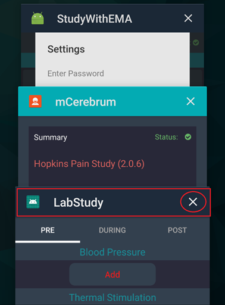
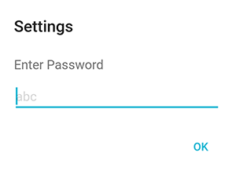
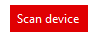
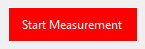

Study Coordinator Guide
Contents
• mCerebrum Instructions
• JINS MEME Eyeglasses Instructions
mCerebrum Instructions
These instructions will guide you in downloading, installing, and configuring the mCerebrum software suite.
Install mCerebrum
1) Download the latest version of mCerebrum (found at this link or by using the QR code below) and install the APK file.
2) Follow the on-screen instructions on your Android device to complete the installation.
3) When the installation is complete, open mCerebrum. You should see the home screen as shown here:

If prompted, please tap Allow to grant the necessary permissions to the mCerebrum app.
Join the Study
1) Tap the Summary button at the top of the mCerebrum home screen.
2) Enter your Username and Password, then tap Login.
3) Select your configuration file from the list of configurations (e.g., opioid-test.zip) then tap Select to download and install it.
Install/Update Apps
mCerebrum uses a suite of software applications in conjunction with the main mCerebrum interface app. Follow these steps to download the latest versions of the apps in your mCerebrum suite.
1) From the mCerebrum home screen, tap Application Install.
2) Tap the green Install All button found at the top of the screen. Follow the on-screen instructions to complete the installation of all the apps.
3) If prompted, please tap Allow to grant the necessary permissions to each of the mCerebrum apps.
You may also be prompted with a "Apps that can appear on top" screen. Scroll down the list and "turn on" all mCerebrum apps to grant them permission to appear on top. This should include DataKit, mCerebrum, PhoneSensor, Scheduler, and possibly others. Once you are finished allowing all mCerebrum apps to appear on top, tap the phone's Back button to return. Tap Allow on any additional permissions prompts that appear.Sensors Setup
Once all applications are successfully installed, follow the steps below to complete the sensor setup process.
1) From the mCerebrum home screen, tap Application Setup.
2) You will need to make sure all the sensors are properly configured. For each app that shows partially configured or not configured, tap the gear icon to access the app settings.
3) For the PhoneSensor app, tap the checkbox to select Default Settings, then tap the phone's Back button to return to the mCerebrum app.
4) For the Wrist Sensor app, you will need to pair the sensor to the phone. Select your device(s) from the list of Available Devices (make sure your MotionSense device is charged and within range) then select Left or Right wrist placement to pair the wrist band to the phone. When all wrist sensors are paired, tap the back button to return to the mCerebrum app.
5) For the Study UI app, set the Wakeup Time and Sleep Time, then tap the Back button to return.6) For the Opioid Lab UI app, select the appropraite medications from the list then tap Save to complete.

How to Wear the Wrist Sensors
All sensors should be charged overnight each day. The expected battery life is approximately 24 hours with a full charge
Wrist sensors should be worn like a watch on each arm with the charging port pointed away from the hand as shown. The buckle is marked L or R to indicate left wrist or right wrist.


How to Clean the Sensors
Wrist sensors can be cleaned gently by hand using disinfecting wipes. DO NOT submerge the devices in water. If there is any damage or major spillage, participants should contact a field manager and swap out the device for a new one.
Start Study
1) Before beginning with a new participant, it will be necessary to exit the secure Launcher app that locks down the phone during the lab study portion. If you are in the secure Launcher (shown in the screenshot below), tap the down arrow button near the upper-right corner of the screen.
2) Next, tap the Admin icon.
3) Enter the admin passcode, provided separately.
4) Next, tap the Exit button highlighted below.
5) Finally, tap OK to confirm and exit the secure Launcher.
Note: You may be directed to a "TouchWhiz Easy Home" screen. If necessary, press the phone's Home button to return to the phone's home screen.
6) After exiting the secure Launcher, tap the mCerebrum app icon found on the phone's home screen to open mCerebrum.
7) Confirm that all mCerebrum applications are installed and configuration is complete as detailed in the previous sections of these instructions, then tap the Start Study button to begin data collection.
You should see the main study UI (StudyWithEMA app) shown below.
Lab Study
1) Once you have started the study on the phone, go to the phone's home screen and find LabStudy in the list of apps. Tap the icon to open the LabStudy app.
Note: Before beginning the lab study, make sure the other study applications are still running. This will ensure the mobile sensor data collection is taking place. You will see app icons in the notification bar: an Android icon (StudyWithEMA app) and a clock icon (Scheduler app).
Note: If you need to check the wrist sensor data quality or connectivity at any time, you can use the StudyWithEMA icon (shown below) on the phone's home screen to return to the main study UI.
2) In the LabStudy app, you can input the participant's pre/during/post lab data for blood pressure and pain level. Tap Save to confirm each selection throughout the lab study.
3) When the lab study session is complete, please make sure you close the LabStudy app so it is no longer running. Press the icon button in the bottom-left corner of the phone, then tap the "X" as highlighted in red below to close the LabStudy app,

Begin Field Study
1) Open the secure Launcher app to re-enter the secure mode to lock down the phone. Tap the Launcher icon as shown below. (It may appear as either of the two icons shown.)
2) You should see the home screen of the secure Launcher as shown below.
3) Tap the mCerebrum app icon as shown in the image above to return to the main study UI. If data collection is still running, you will see the screen shown below. You may now hand the phone over to the participant to begin the field study.
Study UI
Sensor Data Quality
Use the Sensor Data Quality icons to determine if your wrist sensor is collecting good data.

Green checkmark means good data quality.

Yellow caution icon means bad data quality.

Red X means no data is being collected.
If you see a yellow caution icon or a red X icon for an extended period of time, you may tap the icon to view a list of simple troubleshooting options:
- In the menu (found in the upper-left corner of the app’s home screen), tap Reset Application, wait 15 seconds and check again.
- Restart the phone, wait one minute and check again.
- Make sure the wrist sensor is charged and LED lights are on.
You may also tap the Graph button to view the wrist sensor data on a plotter in real-time, or tap the Tutorial video link to view a video with detailed troubleshooting instructions.

How to Set User Privacy
The Pause and Resume Data Collection interface allows participants to stop data collection for a predetermined period of time for privacy purposes.
1) Tap the pause icon.
2) Tap Set Privacy Duration and select the amount of time you wish to turn off data collection.
3) Tap Set Privacy Type and select the features you wish to deactivate during the pause.
How to Input Pain Medication Info
To input participant pain medication information, tap the Pain Medication button in the Actions interface.

Then tap Yes to confirm that pain medication has been taken (or tap No to cancel).
Data Syncing
When a participant is finished with the study, please complete the following steps to sync the data to the cloud, shut down all applications, back up the data on a computer, and prepare the phone for the next participant.
IMPORTANT NOTE: The data files that are recorded by the phone are one hour in length before they are completed and a new file is started. This takes place at the top of every hour. (E.g., midnight, 1:00, 2:00—22:00, 23:00, etc.). This means you should wait until the top of the hour AFTER completing a participant (e.g., regardless if they are done at 14:01, 14:30, or 14:59, they must wait until 15:00 to sync data to the cloud).
Sync Data to the Cloud
1) First, make sure the study is running. (If necessary, tap Start Study in the mCerebrum app.)

2) Open DataKit using the app icon on the phone’s apps screen. If applicable, this may require exiting the mobile device management software (ie, AirWatch).

NOTE: If applicable to your study, you will need to remove the GPS restrictions from the data stream before uploading. To do this, tap the settings gear icon found in the upper-right corner of the Storage/DataKit app, select Upload Data to open the Upload Data menu, then uncheck the Location box under Restricted Data Stream. Tap Save to save your changes, then Close to return to the app.

3) On the DataKit homescreen, make sure the timer is running to show data is being collected. If the timer says INACTIVE, you may need to start the study as described in step 1.

4) Under the Cerebral Cortex header, tap the Toggle button to sync data to the cloud.

5) When you see the “Upload Complete” message, data syncing is now complete.

NOTE: If applicable to your study, be sure to access the settings menu and re-check the Location box under Restricted Data Stream to enable GPS restrictions. Then tap Save to save your changes. This should be done after data upload is complete.

Stop Data Collection
1) Open the mCerebrum Study app.
2) In the Study app, open the menu found in the upper-left corner.

3) Tap Settings.
4) Enter the password provided to exit the study and stop data collection.

5) When you see the mCerebrum app home screen (example shown below), this indicates data collection has stopped.

Back Up Data on a Computer
1) Connect the smartphone to a PC using the charging cable.

2) Create a new folder on your computer. (It may be helpful to use the participant’s user ID as the new folder name.)
3) Using the computer, navigate to the phone’s org.md2k.datakit folder. [Phone > Android > data > org.md2k.datakit]
4) Copy the org.md2k.datakit folder and paste it to the new folder you created.
5) Navigate to the phone’s log folder. [Phone > log]
6) Copy the log folder and paste it to the new folder you created. All study data is now saved to the computer.
Prepare the Phone for the Next Participant
Leave the study:
1) First open the mCerebrum app (by tapping the mCerebrum icon on the home screen or by tapping Settings in the Study app menu found in the upper-left corner).
2) In the mCerebrum app, open the menu found in the upper-left corner.
3) Tap the User ID at the top of the menu next to the mCerebrum logo, then tap Leave Study.

4) Tap Yes to confirm and leave the study.

Delete the Database Storage:
1) From the mCerebrum app home screen, tap Application Setup.

2) Find the Opioid Lab Study app in the list, and tap the Open/Play icon to open the Opioid Lab Study app.

3) On the Opioid Lab Study app home screen, tap the trash can icon in the top-right corner of the screen to clear the UI data.
4) Return to the Application Setup screen. Find the Storage app in the list, and tap the Delete icon (red minus sign) to clear all data from Storage.

5) Tap Yes to confirm.

Join the Study with a New Participant:
1) On the mCerebrum home screen, tap mCerebrum (click to join study).

2) On the next screen, enter the appropraite User ID and password for the user and tap Login.
3) When prompted, select the appropriate config file from the list.
4) After logging in, check to make sure all apps are installed and up-to-date (tap Application Install from the mCerebrum home screen, then tap the Check Updates button).
JINS MEME Eyeglasses Instructions
These instructions will guide you in using the JINS MEME glasses and accompanying hardware and software.
Charging the device
To charge the JINS MEME glasses, find the charging port on the underside of the right earpiece. Use the provided charging cable.
Run JINS MEME software
1) Open the JINS MEME software by double-clicking the JINS MEME Data Logger icon found on the desktop.
2) If necessary, click Run to confirm. When the application opens, you will see the following screen:
Pair the device to the laptop
1) Make sure the glasses are charged, then insert the JINS MEME USB dongle into the laptop.
2) Click the Scan port button in the application window to allow the software to scan for the USB dongle.
3) Once the COM number appears (shown as COM5 in the image below), click the Open button next to the COM number.
4) Find the power button on the right earpiece of the glasses. Hold the power button until the blue LED light remains flashing.
5) Next, click the Scan device button. The software will scan for available devices and find the JINS MEME glasses.

6) When the device number appears (shown as 28A18305A884below), click the Connect button to pair the devices.
When the connection is complete, you will see the dialog box change to "Status: Connected" as shown below.
Note: This connection may take a moment. If you are experiencing trouble, please make sure the blue LED light on the glasses remains flashing, and make sure there are no other Bluetooth devices in range that may be interfering with the signal.
Collect Data
1) IMPORTANT: Before collecting data, make sure the drop-down lists under the Measure section of the app show the following selections: "Full, 100 Hz, 2g, 250dps" as shown below. Please ensure these settings are correct before beginning each data collection session. Incorrect settings may result in data that is uncollected or unusable.
2) To begin data collection, click the Start Measurement button found towards the bottom of the application window.

3) Data will begin to populate the graphs on the right side of the window as shown below. This will provide you with a live look at the data visualizations.
Note: If you do not see any data visualized in the graphs, no data is being collected. Please confirm that the sensor device is charged and the pairing process has been accurately completed.

IMPORTANT: Please make sure the JINS MEME glasses and the laptop stay within Bluetooth range of each other for the entire duration of data collection. If the connection is lost during data collection, it may require restarting the application and beginning the pairing and data collection process again. For example, if a participant needs to leave the room for any reason during data collection, please have them leave the glasses in the room while they are away.
4) When you are finished collecting data, click the Stop Measurement button.
5) The data will be exported in .csv format. To find the data files, navigate to the JINS MEME data files folder on the desktop.
By default, the data files are automatically named using the following structure:
DeviceID_yyyymmddhhmmss (device id, year, month, day, hour, minute, second — e.g., 28A18305A8B9_20181130120000)
At the conclusion of each lab study participant, please rename the data file to include the participant ID in the file name. This will greatly assist in avoiding confusion during data analysis.
More information regarding transferring data files will be provided separately.
6) When you are ready to close the app, you will first be required to disconnect the device by clicking the Disconnect button. Note: Once disconnected, you will need to complete the steps above for pairing the device to the laptop before beginning another data collection session.
For more information about the JINS MEME glasses, you may visit their full instruction manual or GitHub repository.